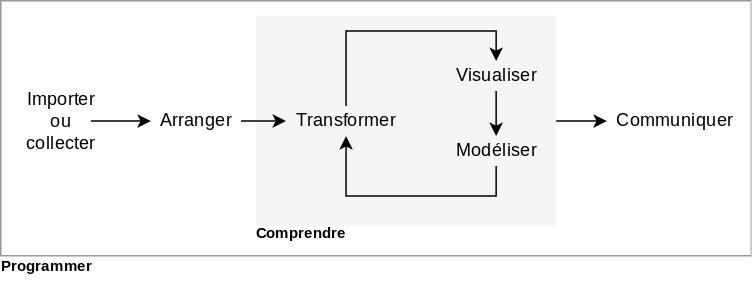

Biostatistiques
2021-02-17
Chapitre 1 Introduction
(S. É. Parent, Ingénieur, PhD.; Z. Coulibali, Agronome, PhD.)
1.1 Étapes du projet en science des données
Un projet en science des données comprend trois grandes étapes.
D’abord, vous devez collecter des données et vous les compilez adéquatement. Cela peut consister à télécharger des données existantes, exécuter un dispositif expérimental ou effectuer un recensement (étude observationnelle). Compiler les données dans un format qui puisse être importé est une tâche souvent longue et fastidieuse.
Puis, vous investiguez les données collectées, c’est-à-dire vous les visualisez, vous appliquez des modèles et testez des hypothèses.
Enfin, la communication des résultats consiste à présenter les connaissances qui émergent de votre analyse sous forme visuelle et narrative, avec un langage adapté à la personne qui vous écoute, qu’elle soit experte ou novice, réviseure de revue savante ou administratrice.
Grolemund et Wickham (2018) proposent la structure d’analyse suivante, avec de légères modifications de ma part.

Le grand cadre spécifie Programmer. Oui, vous aurez besoin d’écrire du code. Mais ceci n’est pas un cours de programmation et je préférerai les approches intuitives.
1.2 Statistiques ou Science des données ?
Selon Whitlock et Schluter (2015), la statistique est l’étude des méthodes pour décrire et mesurer des aspects de la nature à partir d’échantillon.
Pour Grolemund et Wickham (2018), la science des données est une discipline excitante permettant de transformer des données brutes en compréhension, perspectives et connaissances.
La différence entre les deux champs d’expertise est subtile, et certaines personnes n’y voient qu’une différence de ton.
Data Science is statistics on a Mac.
— Big Data Borat (@BigDataBorat) 27 août 2013
Confinées à ses applications traditionnelles, les statistiques sont davantage vouées à la définition de dispositifs expérimentaux et à l’exécution de tests d’hypothèses, alors que la science des données est moins linéaire, en particulier dans sa phase d’analyse, où de nouvelles questions (donc de nouvelles hypothèses) peuvent être posées au fur et à mesure de l’analyse. Ce qui arrive généralement davantage lorsque l’on fait face à de nombreuses observations sur lesquelles de nombreux paramètres sont mesurés.
La quantité de données et de mesures auxquelles nous avons accès aujourd’hui grâce aux technologies de mesure et de stockage relativement peu dispendieuses rend la science des données une discipline particulièrement attrayante, pour ne pas dire sexy.
J’aurais pu me limiter à …. Mais il est préférable de joindre de la pratique à la théorie de manière à motiver les plus curieux pour se pratiquer à l’analyse des données avec un logiciel totalement gratuit. …